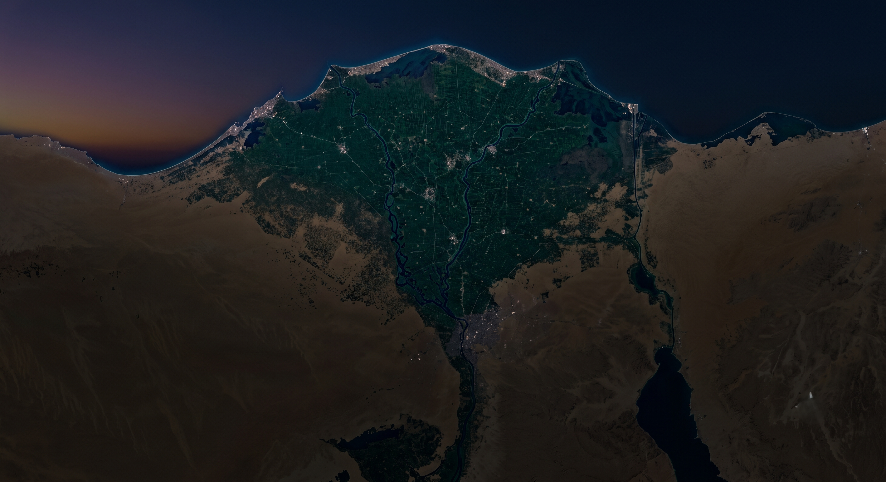
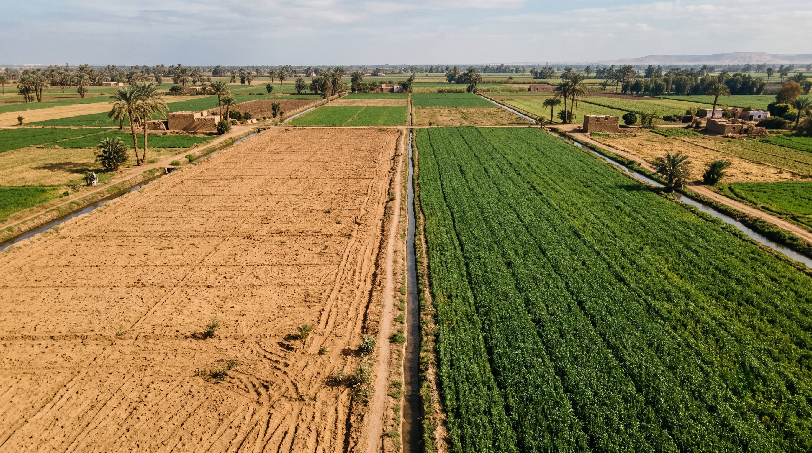
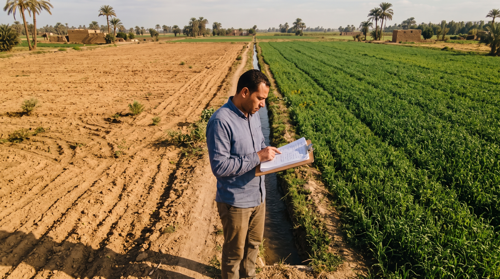
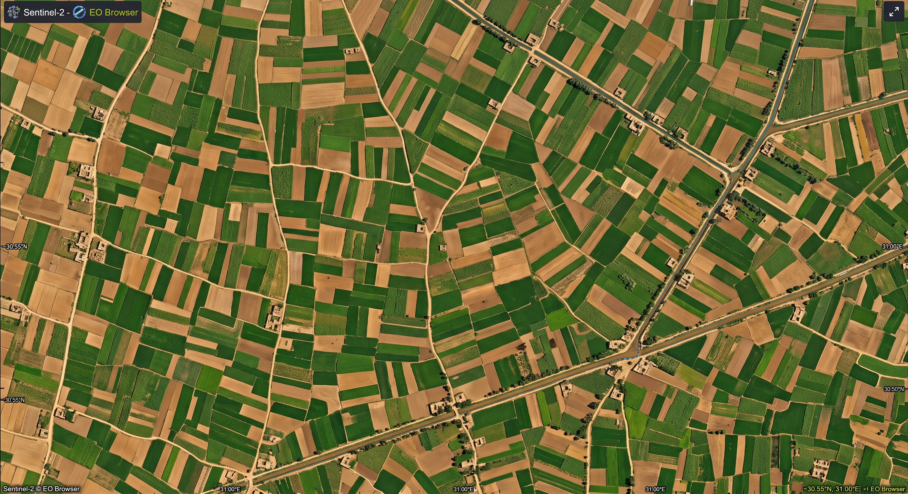
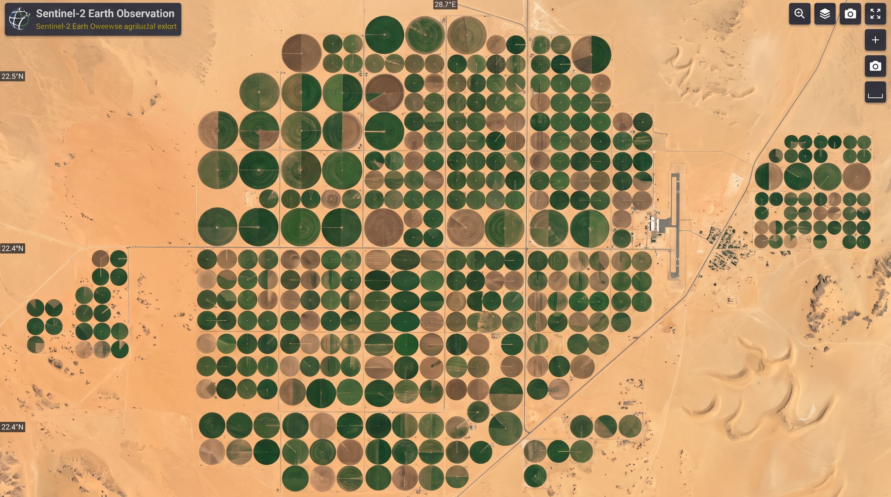
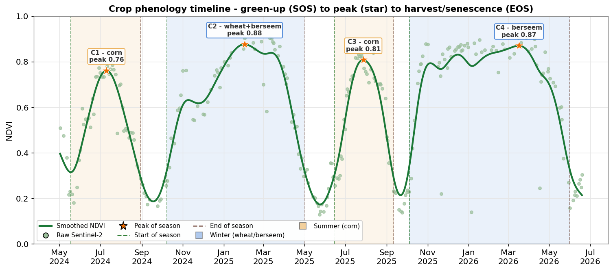
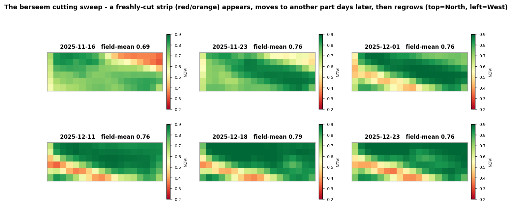
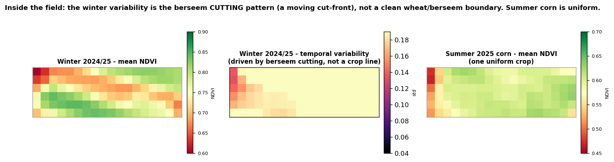
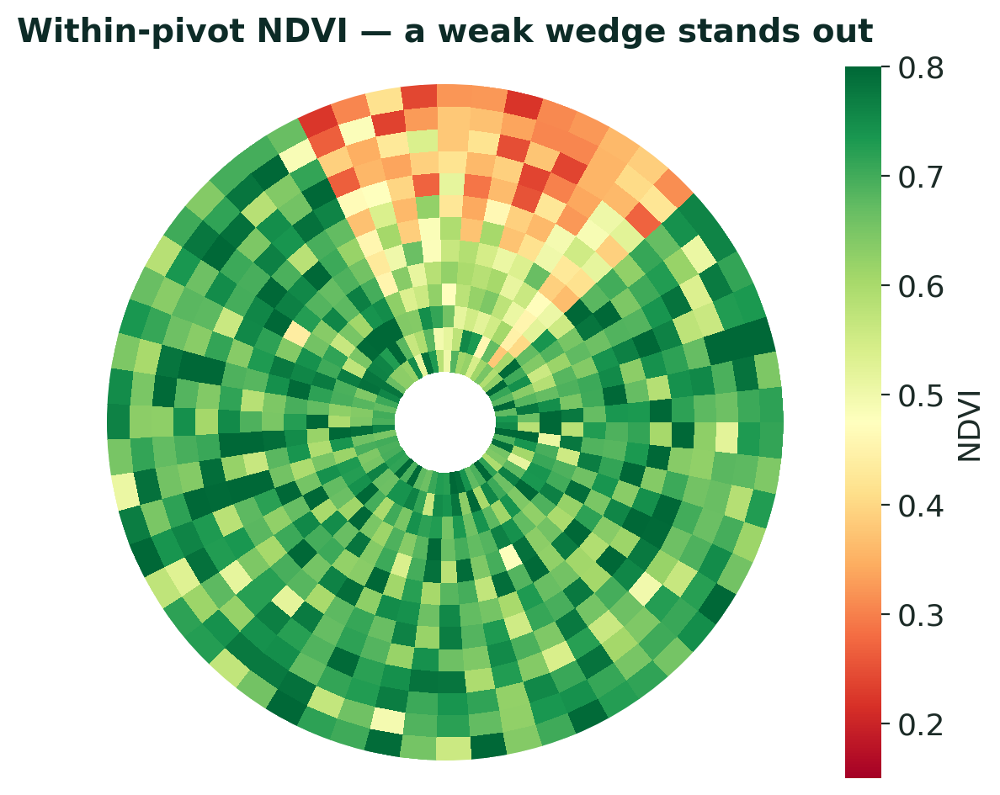
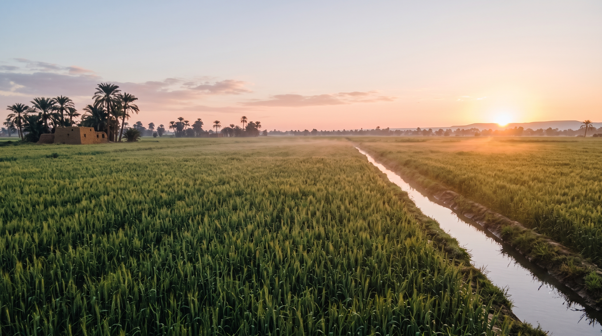

FarmTrust · NeuralAlloy
Turns a land boundary into a lender-facing Land Assessment Report.
A satellite land-assessment platform for agricultural finance — evidence, not a decision.
Graduation project — NeuralAlloy · Faculty of Artificial Intelligence, Menoufia University
Section 1 — The problem
Land is a frozen asset.
- The farmer needs financing — a season, equipment, expansion, a way out of a crisis.
- His main asset is the land. But land alone isn't cash — it needs financing and operation to become production.

Section 1 — The problem
The lender asks harder questions.
- Is the land actually active?
- Is the activity recent and repeated?
- Will the money reach the crop?
- Does activity continue after financing?
Section 1 — The problem
Today's review doesn't scale.
- Paper, collateral, relationships, field visits.
- Visits matter — but they're slow, costly, and don't scale.
- The same land gets judged differently by different people. It's manual, not standardised.

The evidence gap
The land has a history.
Finance can't read it.
Satellite data exists — but a raw image isn't a decision, and the lender isn't a remote-sensing expert.
FarmTrust turns land history into a readable Land Assessment Report. We don't approve or reject — we're the evidence layer.
Section 2 — Market
A large, underserved market.
ISF Advisors 2025 · DataM Intelligence · Grand View Research · CAPMAS / Agricultural Bank of Egypt
Section 2 — Market
Everyone reads land. For someone else.
Powerful tools — but the buyer is the farmer or the developer, not the lender.
Section 2 — Market
FarmTrust is the finance layer.
It turns land history into credit-review language — not a farmer tool, not an imagery API.
Section 2 — Market · traction
And it's already been validated.
- The idea landed with the people who'd actually use it — strong early reception.
- Won Entlaq · AgriTech Hackathon — 1st place, 2025.
1st place · 2025
Entlaq — AgriTech Hackathon 2025
Section 3 — Product & pipeline
Boundary in. Report out.
Section 3 — Product & pipeline
A dip can be a harvest, not a failure.
- One image misleads. A time window shows activity appear, repeat, pause, recover.
- We smooth a daily curve (Whittaker–Eilers, ~45-day phenology) — a model-derived curve, kept distinct from raw evidence.
Section 3 — Product & pipeline
Same engine, different questions.

Traditional fields
Small, fragmented, seasonal → cultivation history, crop-health trend, seasonal behaviour.

Reclaimed pivots
Large, circular, irrigation-driven → active-vs-idle, within-pivot uniformity, weak zones.
per-cycle amplitude — each cycle vs. its own baseline/peak, not one fixed threshold
Section 3 — Product & pipeline
Five stages. Every one inspectable.
Never image → score. Every claim traces back to data. + crop & yield on top of the seasons
Section 3 — Product & pipeline · stages 1–2
Ingestion & indices.
AOI → bbox → Planetary Computer STAC → Sentinel-2 L2A. Solar-day mosaic; reads only the needed COG windows.
Polygon mask · SCL cloud removal · in-parcel valid_fraction — measured only inside the boundary.
NDVI · EVI · NDMI · NDWI · MNDWI — mean + p95 per solar day.
Section 3 — Product & pipeline · stages 3–5
Smoothing → windows → assessment.
- Quality-weighted Whittaker–Eilers smoothing on a daily grid.
- Per-cycle activity windows — good / interrupted / weak, with boundary certainty.
- Coverage (how good the record is) stays separate from confidence — data gaps ≠ land risk.
Section 3 — Product & pipeline
What's in the report.
Facts, meaning, confidence, and what to check — every claim with its provenance. Confidence before claims.
Section 4 — Crop mapping & yield
Then: what, and how much?
The layers that make it useful for crop-linked finance, contract farming, and procurement.
Section 4 — Crop mapping & yield
How we identify the crop.
- Field-level (not pixel) seasonal features — less cloud & edge noise.
- Sentinel-2 features; XGBoost / CatBoost / LightGBM / LSTM, validated on the AOI.
Section 4 — Crop mapping & yield
How we estimate yield.
Seasonal features → yield in tons/ha. Timing is the value:
Section 5 — Case study · El-Kom El-Akhdar
Reading the parcel like an analyst.
- One Menoufia parcel, two years of Sentinel-2.
- Four cycles a year — a double-crop rotation.
- Sharp winter cereal hump vs. a later, broader berseem plateau; the edge cycle stays open.

Real El-Kom El-Akhdar parcel · two-year greenness, four detected cycles
Section 5 — Case study · El-Kom El-Akhdar
A dip is a harvest, not a failure.
A freshly-cut strip migrates across the field while the field-mean barely moves — the dips are fodder cuts (berseem), not crop failure.

Real El-Kom El-Akhdar parcel · six dates, field-mean ≈ 0.76
Section 5 — Case study · El-Kom El-Akhdar
Patchiness is management, not a bad crop.
Winter variability is the cutting pattern, not a static wheat/berseem boundary; summer corn is uniform — so a wide spread reads as management. Exactly the facts the platform captures.

Real El-Kom El-Akhdar parcel · winter mean / variability / summer corn
Section 6 — The AI assistant
The same reads — without the analyst.
Ask what a reviewer asks. Answered from the report's evidence — values and text, not images. Arabic & English.
Section 6 — The AI assistant
It knows its limits.
Decision support, not a decision — it won't approve, reject, or score financing. A deterministic fallback keeps the pipeline the source of truth, and the hallucination risk stays stated, not hidden.
Section 7 — Data engine & monitoring
After financing, we don't stop.
- Track the financed land: planted as agreed? activity started? trending normally?
- Watch a pivot → catch a broken sprinkler or stressed wedge → alert → fast inspection.

Section 7 — Data engine & monitoring
The real bottleneck is data. So we store it.
In Egypt the scarce thing is high-quality local data. So we store it from day one — and monitoring is the primary source.
Section 7 — Data engine & monitoring
It compounds — into a data company.
Business path
land assessment today → agricultural data intelligence tomorrow
Section 8 — Future work
Where it grows.
every step grows through validation, not claims
Section 8 — Limitations
Stated plainly.

Closing
It doesn't approve the loan.
It makes the land readable.
A bounded, satellite-backed Land Assessment Report — structured, readable, repeatable.
Land assessment today — land-history intelligence tomorrow.
NeuralAlloy · Faculty of Artificial Intelligence, Menoufia University · Questions?